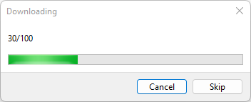
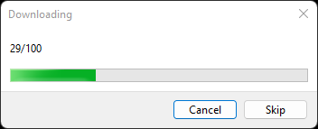
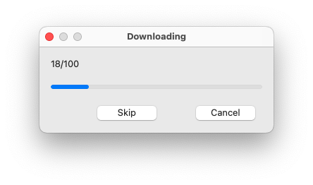
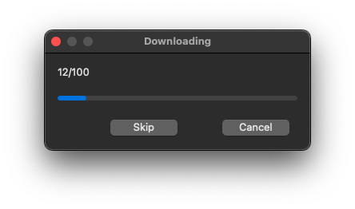
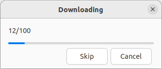
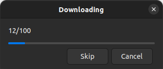

|
xtd
0.2.0
|
progress_box.cpp
demonstrates the use of xtd::forms::progress_box progress dialog.
- Windows
- 

- macOS
- 

- Gnome
- 

#include <xtd/forms/application>
#include <xtd/forms/button>
#include <xtd/forms/form>
#include <xtd/forms/progress_box>
#include <xtd/threading/thread>
using namespace xtd;
using namespace xtd::forms;
public:
form1() {
text("Progress box example");
client_size({ 400, 200 });
download_button.parent(*this)
.text("Download")
.location({ 10, 10 })
.size({ 150, 35 })
.click += [this] {
progress_box::show(*this, "Downloading", "Please wait...", 0, 0, 100, progress_box_options::show_cancel_button | progress_box_options::show_skip_button);
progress_box::update(index, "Downloading", xtd::ustring::format("{}/{}", index, progress_box::maximum()));
}
};
}
private:
button download_button;
};
auto main()->int {
application::run(form1 {});
}
static void run()
Begins running a standard application message loop on the current thread, without a form.
static int32 maximum()
Gets the maximum value of the range of the progress dialog.
static int32 minimum()
Gets the minimum value of the range of the progress dialog.
static void update(const progress_box_options options)
Updates progress box.
static void sleep(int32 milliseconds_timeout)
Suspends the current thread for a specified time.
static ustring format(const ustring &fmt, args_t &&... args)
Writes the text representation of the specified arguments list, to string using the specified format ...
Definition: ustring.h:744
xtd::forms::style_sheets::control button
The buttton data allows you to specify the box of a button control.
Definition: button.h:23
xtd::forms::style_sheets::control form
The form data allows you to specify the box of a form control.
Definition: form.h:21
@ text
The xtd::forms::status_bar_panel displays text in the standard font.
@ show_cancel_button
Whether cancel button is shown.
The xtd::forms namespace contains classes for creating Windows-based applications that take full adva...
Definition: about_box.h:13
The xtd namespace contains all fundamental classes to access Hardware, Os, System,...
Definition: system_report.h:17
Generated on Sun Oct 1 2023 07:46:00 for xtd by Gammasoft. All rights reserved.